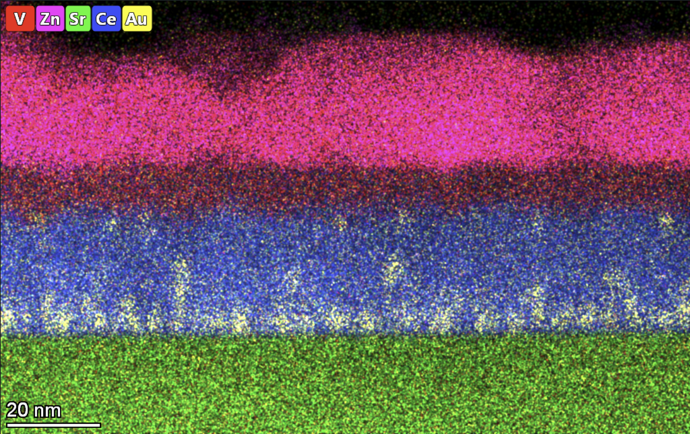
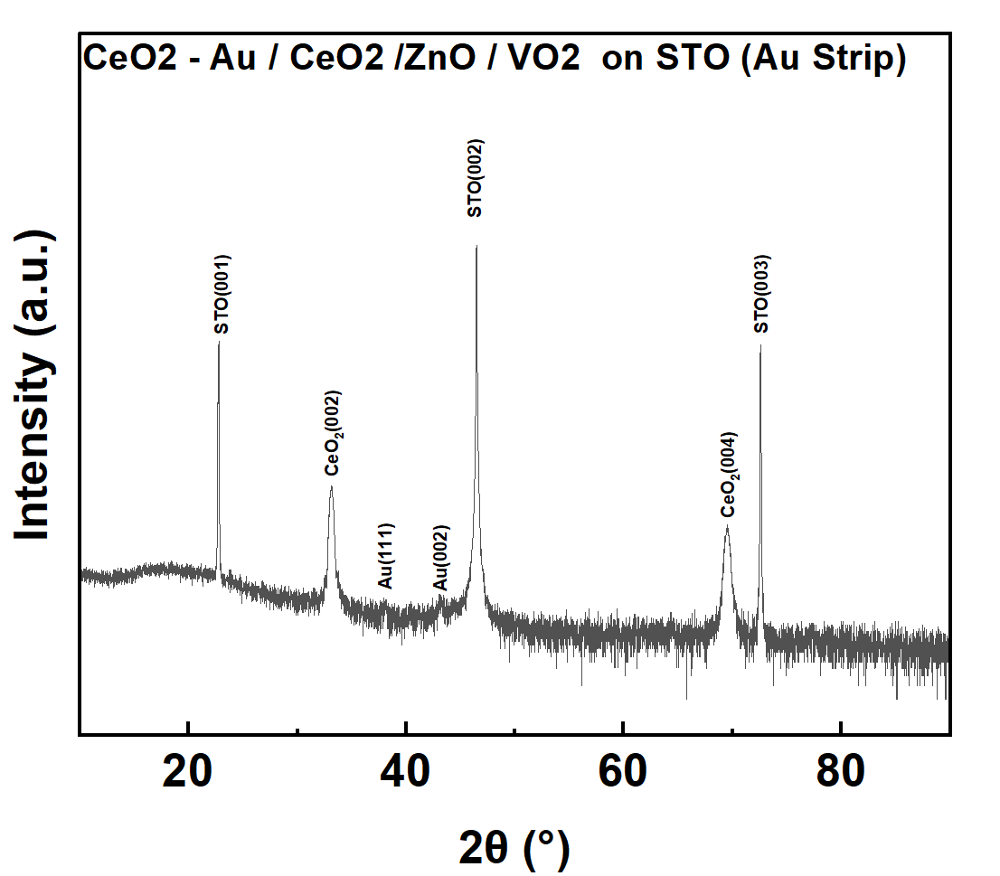

Integrating a selector with resistive memory
This experimental project investigates vertically integrated one-selector/one-resistor (1S1R) structures using CeO₂–Au-based resistive-memory layers and VO₂-based selector layers. The work examines how film growth, layer sequence, and interfaces affect the electrical behavior of the stack.
The project is distinct from the compact-model and programming work: here the main focus is materials and device integration, including whether the integrated selector layer exhibits the desired switching behavior.


The two views answer complementary structural questions: microscopy shows the layer geometry, while elemental mapping provides chemical context. Connecting those observations to electrical response is part of the ongoing interface-quality work; an image alone does not demonstrate selector switching.
My contribution
I worked on thin-film fabrication and characterization of the memory layers and integrated stacks. The project record follows changes in oxygen pressure, growth temperature, film thickness, and layer sequence, together with electrical and structural characterization.
- Growth and stack iteration: investigating CeO₂-based memory films and VO₂-containing multilayers, including interface-layer experiments with Al₂O₃ and ZnO.
- Electrical characterization: comparing I–V behavior across device structures and processing conditions.
- Structure–property analysis: using XRD, cross-sectional microscopy, and elemental mapping to investigate how the layer structure and interfaces relate to the measured response.
Current findings & ongoing work
The development record shows substantial changes in switching behavior with the film and stack conditions. It also records a central integration challenge: some VO₂-containing devices exhibited memristive behavior rather than the intended threshold-switching response. Interface quality and the behavior of each layer therefore remain important experimental questions.

As of September 2026, I am advancing interface-quality optimization and temperature-controlled electrical testing. Those tests will help characterize the temperature dependence of the response and guide further stack refinement. They are ongoing work, with no completed temperature-dependent result claimed here.